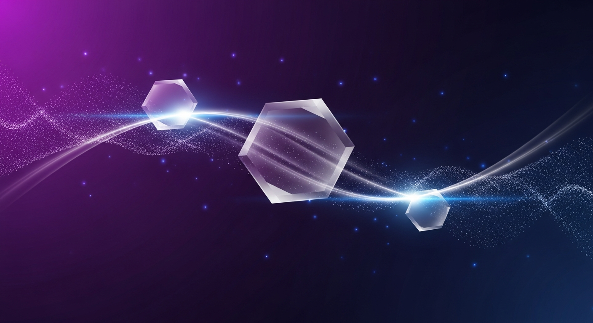

A technical map for engineers — how SaucerSwap’s AMM→CLOB hybrid and Kia’s invoice tokenization stack reuse Hedera primitives (HTS, HCS, Cryptocurrency Service, EVM) to deliver low‑cost, enterprise‑grade products today.
Hedera is being used for production systems that deliver predictable fees and enterprise governance. In the latest community briefing multiple teams presented production stacks you can reproduce: SaucerSwap’s multi‑layer DEX (V1 AMM → V2 concentrated liquidity → announced V3 CLOB hybrid), Kia’s AI underwriting plus HTS‑tokenized invoices and a near‑mainnet H‑bridge, and sensor/IoT projects using HCS for ordered event logs. These projects reuse the same Hedera primitives in repeatable ways. If you’re building DeFi, tokenized credit, or an agent economy that needs cheap microtransactions and 3–5 second finality, the architectures discussed on the call are directly actionable.
SaucerSwap runs three execution layers with distinct tradeoffs and a clear hybrid strategy for V3.
Engineers building integrations should simulate both matching and AMM fallback paths and test maker/taker fee flows.
Kia’s stack combines AI underwriting, human review, HTS tokenization, a Hedera‑native H‑bridge, and a Visa‑powered spend layer (Flo).
Technical flow: 1. Borrowers upload documents (bank statements, invoices, inventory, royalties, POs). 2. KiaFi AI runs a first‑pass underwriting in <15s using 200+ signals to produce an AI report. 3. Human underwriter completes full assessment in 48–72 hours. 4. After underwriting, invoices/receivables are tokenized on Hedera using HTS and become on‑chain collateral and reputation atoms. 5. Tokenized assets enable standardized risk signals for cross‑border lenders.
Reported metrics from the call: - >$3M in tokenized invoices (fully funded) - 64 borrowers, 85 registered lenders - >$30M shortlisted deal flow - DeFi Llama rank target: current 7th → goal 5th
Infrastructure items for integration: - H‑bridge: Hedera‑only bridge focused on concentrating liquidity inside Hedera. Claimed cost reduction (call statement) vs. multi‑chain bridges; status: “one click away from mainnet” at time of call. Request addresses, timelines, and audit info before production use. - Flo: Visa‑powered spend layer. Phase 1 = charge card; Phase 2 = borrow against on‑chain positions while TVL remains on Hedera (i.e., spendability without moving collateral off‑chain). - HCS pilots: cited for cross‑border settlement pilots (Pakistan, Bangladesh) leveraging Hedera’s 3–5s finality.
Map functionality to primitives: - HTS: token issuance and high‑volume token transfers. Use for native asset movements with predictable, low USD‑denominated fees. - HCS: verifiable event ordering and settlement logs. - Cryptocurrency Service (HBAR): ultra‑cheap microtransactions between agents; ideal for high‑frequency tiny payments. - Hedera EVM: Solidity logic and contract execution; HTS tokens can be mirrored into the EVM to behave like ERC‑20s.
Fees and heuristics: - Official fee schedule is USD‑denominated and converted to HBAR at transaction time. Example from docs: stablecoin transfer via HTS ≈ $0.001—validate via the Fee Calculator. - Operational heuristics cited on the call: HBAR transfer ~0.01¢ and HTS transfer ~0.1¢ (use as rough guides only).
EVM gas capacity: - Current referenced benchmark: ~150M gas (Hyperliquid). - Project Bonneville roadmap aims toward ~1B (giga) gas capacity. - If building SaucerSwap‑scale throughput or institutional order books, include Bonneville in capacity planning and simulate both current and projected gas limits.
Interoperability and economics: - HTS tokens can be mirrored into EVM to avoid duplicating token state while enabling Solidity integrations. - X402 v2 work and a Hedera spec were cited as enabling interoperability with X402‑compatible apps. - HBAR staking matters for network economics (speakers referenced >2% APY).
Start with an asset flow diagram mapping each operation to a Hedera primitive. Example flow: 1) Issue invoice token via HTS. 2) Mirror token into Hedera EVM only when contract logic is required (vaults, lending markets). 3) Record settlement events in HCS. 4) Perform microtransaction signaling on HBAR.
Practical steps: - Use Hedera’s Asset Tokenization Studio and HTS APIs for native issuance. - Mirror HTS tokens into the Hedera EVM when you need Solidity compatibility. - Run local dev instances (the call included a live local SaucerSwap demo). Deploy contracts to a testnet/mirror with HTS/EVM support. - Test vault automation (Bonzai vaults) under simulated price moves; build agents that call vault reallocation endpoints or sign intents for V3. - For high‑frequency tiny payments (vault fee adjustments, oracle pings, bot coordination), prefer HBAR rails as microtransaction channels due to lower absolute per‑transfer costs.
Governance and onboarding: - SAUCE governance allocates treasury and reward programs; community votes can affect spend. - For regulated asset listings, allocate treasury and legal budgets for third‑party onboarding providers (Swarm example) and compliance checks. - Include exchange and stablecoin rails (e.g., USDC on Hedera) in liquidity design and verify expected exchange integrations with counterparties.
Before routing significant user funds or onboarding regulated assets, request: - Contract addresses, HTS token IDs, and vault API endpoints. - Formal release dates for SaucerSwap V3 and a public mainnet schedule for H‑bridge. - Audit reports and independent security attestations.
Treat the above as blockers for production rollout until confirmed.
If you’re building on Hedera, do these three things this week: 1. Map your assets to HTS/HCS/Cryptocurrency Service and draft a fee model using Hedera’s Fee Calculator (use $0.001 per HTS transfer as a starting anchor from docs, and validate current values). 2. Stand up a local SaucerSwap dev instance or testnet mirror and run integration tests for concentrated liquidity and intent signing; wire a Bonzai vault simulation to exercise automated reallocation. 3. Open governance tickets early if you’ll require treasury funds for third‑party onboarding (Swarm example) and start collecting legal/AML requirements for any regulated assets.
Want a follow‑up I can deliver next? - A developer appendix mapping exact Hedera SDK calls (HTS create/mint/transfer; HCS submit/message; Hedera EVM deploy/call) to the SaucerSwap and Kia patterns, with code samples in JavaScript/TypeScript, Java, or Go. - A checklist for production readiness: required audits, token IDs, contract addresses, governance proposals, and compliance steps for listing regulated assets.
Tell me which follow‑up you want (developer appendix or SDK cookbook) and which SDK language you prefer. Also plan to join Hedera Con Miami on May 4 (free sign‑up) and tune into the technical community session with Seal Coin CTO Jeremy Pencia on April 29 for deeper IoT and quantum‑resistance discussions.